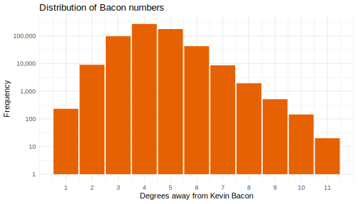
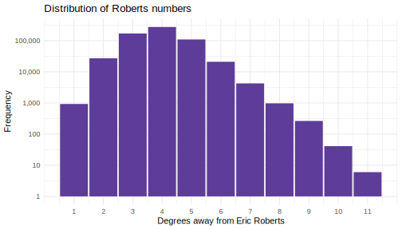
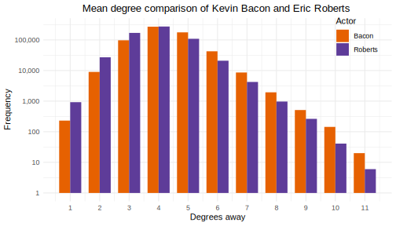

Authors: Bi Wu & Chris Kardatzke
We examined actors/movies data from IMDB (data download | data description). In particular, we were interested in 2 topics:
For sake of clarity, we omit directly quoting code. Readers interested in getting into the weeds should consult the Github repo.
Before we jump into the analyses, we first discuss the preprocessing done. We were primarily interested in movies typically played in theaters or streamed online, not television shows, web shorts, or adult content (all of which is included in the IMDB data download), so these were filtered out.
Basically all actors and movies (>99.9%) were in one large connected component, with a small smattering of other niche/amateur/independent content in numerous smaller disconnected components. These were filtered out too.
Our final dataset contains ~605k actors and 463k movies.
Frigyes Karithny is widely credited as the originator of the six degrees of separation hypothesis that in social networks, any two arbitrary persons can be connected by 6 edge traversals in the network. This was influential in popular culture, inspiring popular films, shows, and music.
One popular spinoff conjecture known was that everyone in Hollywood can be linked to Kevin Bacon in six or fewer film roles. This inspired us to use degrees as a centrality measure and try to identify the “center” of our IMDB network.
Using igraph, we constructed a graph from our edge list data frame based on costar relationships. First, we decided to see how connected people are to Bacon by computing everyone’s distance to him in the network, referred to as their bacon numbers. We found a mean degrees of separation of 4.301. Below is a histogram of these distances.

Next, we wanted to see if we could find a better center of the network. We setup parallelized jobs to traverse the top 5000 most-connected actors in the network (below this number, actors have so few connections that it’s inconceivable they could be the most central) and computed their distance to everyone else in the network.
Using this as our measure of centrality, we found Eric Roberts (brother of Julia Roberts and father of Emma Roberts) to be the most connected, with a mean degrees of separation of just 3.905. Below is a histogram of these distances.

Here is a side by side plot for comparison.

The second thing we were interested in was whether we could use factor analysis to identify genre clusters in an unsupervised way simply by examining costar relationships, without any kind of external genre data or sentiment analysis. We decided to use Karl Rohe’s vsp package due to its speed and ease of use.
We constructed a very sparse (99.999% sparsity) incidence matrix from our edge list and used the vsp function with k=100 as an initial trial. After checking the scree plot, k=20 was determined to be a suitable size. Using the bff function to pick out the 10 best features in each cluster, we get the following groups (a few groups were omitted to reduce verbosity):
Group 1:
Jin shang tian hua, Jigong Huofo, Wangfu Shan, Xin Qingnian, Romance of the Pearl River, Zhuang Zi Shi Qi, Zhoushi Fanjia, Pipa Xing, Duanchang Hua, The Swordswoman of the Wild River: Against the Han Clan
Group 2:
Ushiwakamarû, Sûmidagawa no adauchi, Aizu no Kotetsu, Ôokubo hikozaemon, Setta naoshi Chôgorô, Owari daihachi, Ôniwaka kurô edojô arashi, Kana tehon chûsinghura, Araki mataemon, Sendai hagi
Group 3:
Takip, The Sugar Almonds, Kafkas kartali, The Armless Hero, Ölüm görevi, Babanin suçu, Cehennem arkadaslari, The Endless Struggle, Bitter Love, Silahli pasazade
Group 4:
O Caso do Senhor Vestido de Violeta, As Alegres Comadres de Windsor, O Camões do Rossio, Sinos de Natal, A Janela Fechada, Uma Noite de Paz, Chocolate á Espanhola, O Feitiço da Vovó, Os Terríveis, Música no Andar de Cima
Group 5:
Naya Bakra, Dhoti Lota Aur Chowpatty, Aap Beati, Pyar Ki Rahen, Shareef Budmaash, Hunterwali 77, Lootmaar, Angaare, Laakho Vanzaro, Bedard Zamana Kya Jane
Group 6:
Koi no Tsumako, Kyôenrokû, Ryôen Rokû, Kuroshio, Akînosuke to ôsumi, Aki no koe sannin shoi, Kobonno, Koi no Gisei, Chichiyâ No Mûsume, Onna no chikai
Group 7:
Insaan Ik Tamasha, Khandan, Dil Da Jani, Aakhri Dao, Angara, Bhai Bhai, Eid Da Chann, Taj Mahal, Imam Din Gohavia, Jigri Yaar
Group 8:
Konkurrencen, John Redmond, the Evangelist, Hvorledes jeg kom til Filmen, Pigen fra Klubben, Den Æreløse, Mit Fædreland, min Kærlighed, The Great Circus Catastrophe, Den sidste Nat, Manden med de ni Fingre IV, Cowboymillionæren
Group 9:
Dui Bari, Asamapta, Adarsha Hindu Hotel, Agnisikha, Surya Toran, Kancha-Mithey, Khela Bhangar Khela, High Heel, Ogo Shunchho, Rani Rashmoni
Group 10:
Wenn du Geld hast, Willems Vermächtnis, Die Königin von Honolulu, Tratsch im Treppenhaus, Mutter steht ihren Mann, Strandräuber, Das Herrschaftskind, Der Winkeladvokat, Und oben wohnen Engels, Nichts gegen Frauen
Group 11:
Anbalipu, Anjal Petty 520, Thiruvarutselvar, Gurudakshinai, Enga Ooru Raja, Thayin Madiyil, Kumkumam, En Kadamai, Paladai, Thaye Unakkaga
Group 12:
Chhota Bheem and the Broken Amulet, Chhota Bheem and the ShiNobi Secret, Chhota Bheem aur Hanuman, Chhota Bheem Aur Mayavi Gorgan, Chhota Bheem Banjara Masti, Chhota Bheem Krishna vs Zimbara, Bheem vs Aliens, Chhota Bheem Neeli Pahaadi, Chhota Bheem Paanch Ajoobe, Chhota Bheem the Crown of Valhalla
Group 13:
Ta tria paidia Voliotika, Alygisti sti zoi, To megalo amartima, They Can’t Keep Us Apart, Einai megalos o kaimos, Thimios in the Land of Striptease, Maria Pentagiotissa, Apokliroi tis koinonias, Prodomeni, Klapse, ftohi mou kardia
The code is clearly picking out films purely based on language/country of origin. Following the instructor’s suggestion, we decided to subset the data further to select only titles made in the US and with in no language other than English. Running vsp, choosing k=8 based on the scree plot, and then rerunning vsp followed by bff gives the following clusters.
Group 1: The Last Hour, Free and Equal, This Hero Stuff, His Last Race, Danger, Go Slow, The Thundering Herd, Murder Will Out, Flesh and Blood, The Daredevil, Peg o' My Heart
Group 2: H20: Hustlemania, H20: Opportunity Knocks, H20: Hardcore Kingdom 2, H20: The Best of Subterranean Violence: Volumes 1-666, H20: Hustlepalooza, H20: Sweet Dreams, H20: Written in Blood, CZW: Tournament of Death XV, CZW: Tournament of Death 16, H20: Blood Money
Group 3: Blondie’s Lucky Day, Blondie’s Anniversary, Blondie’s Secret, Blondie, Blondie Brings Up Baby, Blondie Takes a Vacation, Blondie Has Servant Trouble, Blondie Plays Cupid, Blondie on a Budget, Blondie Goes Latin
Group 4: Bells of Rosarita, Song of Arizona, Man from Oklahoma, Heart of the Golden West, Along the Navajo Trail, Bandits of Dark Canyon, Home in Oklahoma, Lights of Old Santa Fe, Rainbow Over Texas, Sunset in El Dorado
Group 5: Before the Movies, The Amulet, The Best Movie Ever, ASRM: The Show, ASRM: Short Films, GoldenEar, The Man-Hunt, Two Missions, The Last Magic Act, Artwork
Group 6: Prank Calls: Video Collection, Prank Calls: 50th Call Anniversary, Prank Calls: Return of the King, Phillip: The Movie, Take Me Back: Greatest So Far…, The Virgins, Forgotten Hero, Ten Dollar Bill, Camp Harlow, The Pastor and the Pro
Group 7: RiffTrax Live: Night of the Shorts IV - SF Sketchfest 2016, RiffTrax Live: Night of the Shorts SF Sketchfest 2013, RiffTrax Live: Night of the Shorts, A Good Day to Riff Hard - SF Sketchfest 2015, RiffTrax Live: House on Haunted Hill, RiffTrax Live: Plan 9 from Outer Space, Rifftrax: Order in the Shorts, RiffTrax: High School Musical, RiffTrax: The Hunger Games, RiffTrax: Star Wars: The Force Awakens, RiffTrax: Captain America: The First Avenger
Group 8: The Days of Noah Part 3: The Valley of Decision, The Days of Noah Part 4: Ark of Fire, The Days of Noah: Judgment Hour, The Days of Noah: The Flood, Kingdoms in Time, Is Genesis History?, The Creation: Faith, Science, Intelligent Design, Charmed by Darkness, Genesis: Paradise Lost, All Aboard
Now, we seem to be getting clusters around genres/topics. Here is a list of cursory guesses of the topics based on glancing at the highlighted titles:
Twitter|YouTube).It seems like certain niche groups tend to release a lot of titles involving the exact same group of cast/crew, and these are easily picked up by vsp. However, entire genres involve too many different people, so they’re not as easily identified.
Even though we weren’t able to identify genres, the results of this analysis (to me at least) are still pretty fascinating. A lot of these topics/titles I’ve honestly never heard of before, and it’s cool to see vsp identifying them and grouping them all together.
We’d like to thank the instructor Karl Rohe for providing us with valuable feedback throughout the course of this investigation.